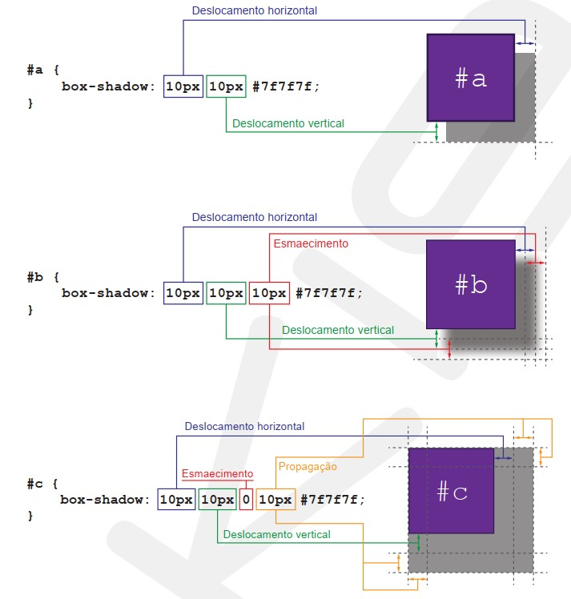

A propriedade box-shadow permite adicionar sombras externas e internas nos boxes dos elementos HTML. O valor dessa propriedade pode ser definido de diversas maneiras. Confira, nas imagens abaixo, algumas formas de utilização da propriedade box-shadow para definir sombras externas.

Os valores dos deslocamentos vertical e horizontal podem ser
negativos fazendo com que a sombra externa seja projetada para
cima e para a esquerda.
As regras para definir uma da sombra
interna são praticamente as mesmas da sombra externa. A única
diferença é que devemos começar a atribuição do valor com a
palavra inset.